世界の色を点描で分解する
世界の陸の色を12グループに分け、各グループから約14か所(1か所は約7km四方)を選び、その中を約77mの細かさの衛星画像で開きました。そこから色を点で採集し、同じ点の地面(ESA世界土地被覆)を重ねています。
- 緑や茶色の色は、細かい色の平均が世界の色とほぼ一致します。例えば世界の色 #2a3815 は、細かい色の平均が #2c3b20 です。混ざると一定の色に集約する、というご推論は、植物の多い土地では成り立ちました。
- 世界の1色は、細かい色の「配合」として分解できます。例えば #2a3815 は、森50%・畑22%・草地18%の混ざりで、暗い緑から明るいオリーブまで6色の点でできています。この配合が、デフォルメの絵(点描の模様)の材料になります。
- 砂漠・雪は、集約が合いません。世界の画像は冬の雪が白く出ますが、細かい画像は雪の少ない季節の合成で、色の調子も違います(砂色の #bf9f77 に対し、細かい色の平均は #fadd8d)。季節と色の調子をそろえる必要があります。
- 模様の大きさは、多くが約150m以下で、今回の細かさの限界でした。砂漠は約270m、水と森の混ざる所は約420mと、少し大きな模様になります。
12グループの分解
陸の18.3% ・ 調べた場所 14か所
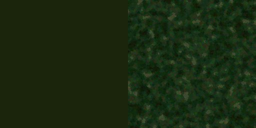
地面の中身: 森 76% ・ 湿地 12% ・ 草地 9%
細かい色の平均: #192e15 ・ 模様の大きさ(目安): 約154m
陸の16.8% ・ 調べた場所 14か所
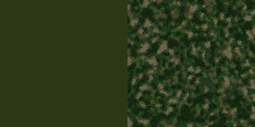
地面の中身: 森 50% ・ 畑 22% ・ 草地 18% ・ 湿地 5%
細かい色の平均: #2c3b20 ・ 模様の大きさ(目安): 約154m
陸の12.4% ・ 調べた場所 14か所
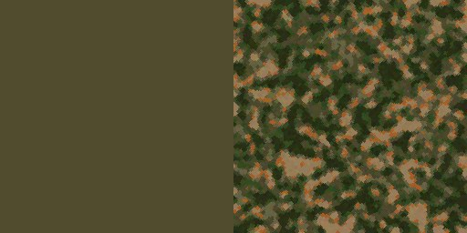
地面の中身: 草地 47% ・ 畑 25% ・ 森 24%
細かい色の平均: #524e2c ・ 模様の大きさ(目安): 約154m
陸の11.6% ・ 調べた場所 14か所
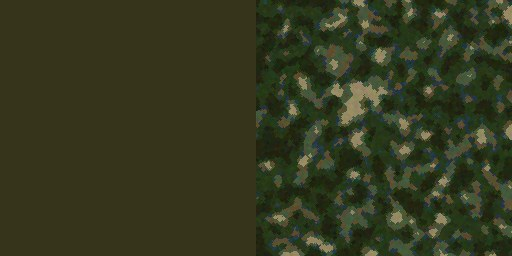
地面の中身: 森 31% ・ 草地 31% ・ 低木 13% ・ 畑 7% ・ 水 6%
細かい色の平均: #333e24 ・ 模様の大きさ(目安): 約192m
陸の10.4% ・ 調べた場所 14か所
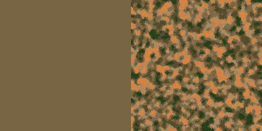
地面の中身: 低木 31% ・ 草地 27% ・ 畑 25% ・ 裸地・岩 14%
細かい色の平均: #836941 ・ 模様の大きさ(目安): 約154m
陸の9.6% ・ 調べた場所 14か所
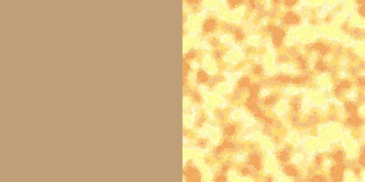
地面の中身: 裸地・岩 98%
細かい色の平均: #fadd8d ・ 模様の大きさ(目安): 約269m
陸の8.9% ・ 調べた場所 14か所
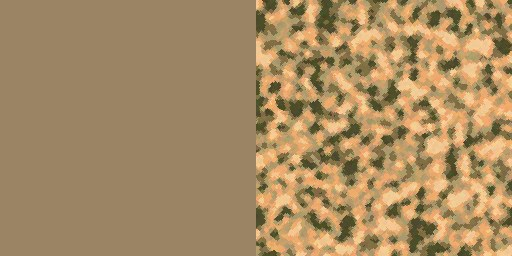
地面の中身: 裸地・岩 50% ・ 草地 19% ・ 低木 16% ・ 畑 12%
細かい色の平均: #b59362 ・ 模様の大きさ(目安): 約154m
陸の5.3% ・ 調べた場所 14か所
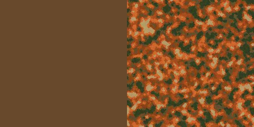
地面の中身: 草地 47% ・ 低木 37% ・ 水 8% ・ 畑 4%
細かい色の平均: #875327 ・ 模様の大きさ(目安): 約154m
陸の1.8% ・ 調べた場所 14か所
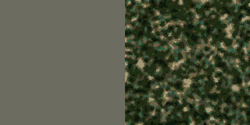
地面の中身: 草地 33% ・ 森 29% ・ 水 15% ・ こけ 15% ・ 裸地・岩 5%
細かい色の平均: #384127 ・ 模様の大きさ(目安): 約154m
陸の1.7% ・ 調べた場所 14か所
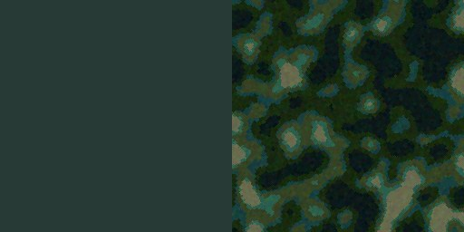
地面の中身: 水 41% ・ 森 28% ・ 草地 20% ・ 畑 4%
細かい色の平均: #1f3522 ・ 模様の大きさ(目安): 約423m
陸の1.6% ・ 調べた場所 14か所
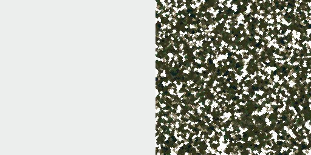
地面の中身: こけ 26% ・ 雪・氷 21% ・ 草地 17% ・ 水 13% ・ 裸地・岩 11% ・ 湿地 9%
細かい色の平均: #6b6d5a ・ 模様の大きさ(目安): 約77m
陸の1.6% ・ 調べた場所 14か所
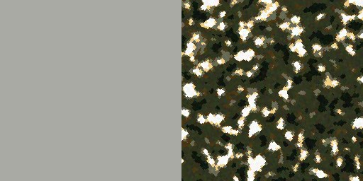
地面の中身: こけ 25% ・ 草地 24% ・ 裸地・岩 21% ・ 森 10% ・ 水 10% ・ 湿地 6%
細かい色の平均: #53543d ・ 模様の大きさ(目安): 約192m
限界
- 各グループ約14か所だけの調査です。偏りがあります。
- 点描の見本は、集めた配合と模様の大きさから私が作った合成です。実際の土地の写しではありません。模様の形(畑の四角、川の筋など)は、まだ反映していません。
- 模様の大きさは、約77mの細かさでは測れない小さな模様を含みません。
- 世界の画像と細かい画像は、別の衛星・別の季節・別の色調整です。砂漠や雪の差は、この違いによります。
- 地質(岩石の種類)は使っていません。
出典: NASA Blue Marble / ESA WorldCover 2021 (CC BY 4.0) / Sentinel-2 cloudless 2020 by EOX IT Services GmbH(Contains modified Copernicus Sentinel data 2020。非営利利用向けの条件があります)。衛星画像そのものは掲載せず、集計した色と、それから作った見本だけを載せています。